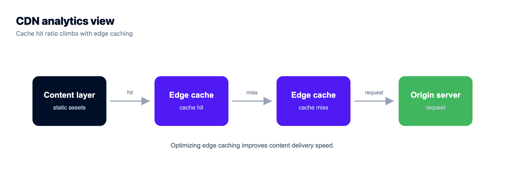
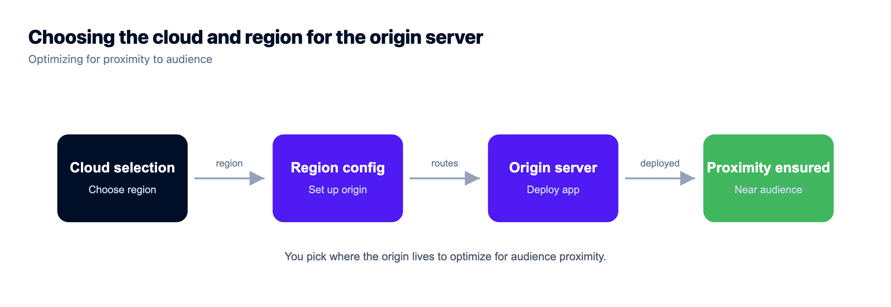

A Fly.io Alternative That's Simpler, and Still Fast Everywhere
Fly.io's pitch is global speed. It runs your app as micro-VMs in many regions so users everywhere hit something nearby, deployed from a slick CLI. Clever engineering, and genuinely the right tool for a specific kind of app. But most people searching for a Fly.io alternative aren't running that kind of app. They want fast, worldwide, and simpler, without babysitting a fleet.
So before comparing dashboards, let's ask the question that actually decides this: what do you mean by "the edge"? Get that right and the whole choice falls out cleanly.
Most apps don't need compute running in 30 cities. They need one solid managed server on a cloud you choose, a fast global edge cache in front for the content layer, and a managed database on the box. Kloudbean gives you that: an owned server across 7 clouds, a managed database, Git push-to-deploy, and Cloudflare Enterprise edge caching for worldwide speed. The boundary is worth stating plainly, because it decides the whole question: Kloudbean runs always-on servers, not dynamic compute spread across dozens of regions. If your app truly needs code executing close to users in many places at once, that is a different architecture and this is not it. Most apps that think they need it need a cache.
First, which "edge" do you actually need?
This is the distinction that untangles everything. When people say "I need the edge," they almost always mean one of two very different things, and the two have wildly different price tags in complexity.
- Content at the edge. Landing pages, marketing sites, images, JS/CSS bundles, and cacheable API responses loading fast for users worldwide. That's a CDN and edge-caching job. Cloudflare's global network does it superbly, and it covers the large majority of "make it fast globally" needs.
- Compute at the edge. Running your dynamic application logic itself in many regions: low-latency writes, real-time interactive compute close to every user. That's the harder, rarer problem Fly specializes in, and it drags real distributed-systems complexity along with it.
Confusing the two is the most expensive mistake in this category. People spin up a global compute fleet when all they needed was content cached at the edge. Be honest about which one you have. If your app is a site, a store, a dashboard, or an API with a normal database behind it, you almost certainly need the first.
What Fly.io is genuinely great at
The fair, one-paragraph version: Fly runs your application as lightweight micro-VMs that can live in many regions, with fine-grained control over machines, scaling, and networking. Some workloads truly need the application compute running close to users on several continents. Real-time multiplayer, collaborative editing, latency-sensitive write-heavy apps with a genuinely global audience. For those, Fly is purpose-built and worth staying on. Don't rip out a capability you depend on for a simpler diagram.
The honest question is whether your app is one of those. Most aren't. A SaaS dashboard, a store, a content site, a typical API: these are fast enough from one well-placed origin, with global snappiness from a CDN, not from replicating your database to a dozen cities.
The hidden tax of running compute everywhere
Fly's power comes with an ops surface, and for one ordinary app it's often more than you bargained for. No single item is hard. You just take on all of them at once.
- Configuration and lifecycle. You manage a
fly.toml, choose regions, and reason about the lifecycle of Machines. That's more to hold in your head than "here's my app, run it." - Distributed state is the real boss fight. The moment your app writes data in more than one region, you inherit replication lag, conflict handling, and the question of where the source of truth lives. This is genuinely hard, and it's the part tutorials gloss over.
- Data locality and residency. Multi-region compute wants multi-region data to stay fast, which collides with rules on where user data may live. A single origin sidesteps that.
- Debugging across regions. A bug that only shows up for users routed to one region, at one time of day, is a miserable thing to chase. One origin means one place to look.
- The database has been a DIY-ish story. Running Postgres on Fly has meant operating it yourself or wiring in a managed partner, rather than the simple managed-on-the-same-box setup most apps want.
- Per-region cost. Every region you run is more instances to pay for. Multi-region is a real bill, not a toggle.
None of that is a flaw in Fly. It's the cost of the flexibility. It only stings when you're paying that cost for capabilities your app never touches. Which brings me to the anti-pattern.

The Kloudbean model: a Fly.io alternative with a managed origin and a real edge
Kloudbean gives you one real, managed server in the region you choose. Flat, predictable price. A managed database right on the box. Git-push deploys with live build logs. Then it puts Cloudflare Enterprise edge caching in front, so your content is served from Cloudflare's worldwide network close to every visitor. (Cloudflare is a paid add-on for any site, and included free for Enterprise customers.) You get the global speed people actually want, plus ownership and simplicity, and you never configure a fleet of Machines.

And because Kloudbean is genuinely multi-cloud (AWS, AWS Lightsail, Google Cloud, Linode, Vultr, DigitalOcean, and UpCloud), you also choose where the origin lives. Put it near your biggest audience or where your data is required to sit. One well-placed server for your app and database, Cloudflare's network for global reach. If you're deploying a Node service, the deploy a Node app to managed cloud guide walks the exact flow, and there's a companion Render alternative writeup if you're comparing PaaS options more broadly.
Fly.io vs Kloudbean, side by side
| Fly.io | Kloudbean | |
|---|---|---|
| Architecture | Micro-VMs, multi-region fleet | Owned managed server + Cloudflare edge cache |
| Global speed | Distributed compute in each region | Cloudflare Enterprise edge caching worldwide |
| Best at | Dynamic compute close to users everywhere | Fast sites and apps from an origin you own |
| Database | Self-run or a managed partner | 6 managed engines on the box |
| Complexity | fly.toml, regions, Machine lifecycle | Connect a repo, deploy |
| Cloud choice | Fly's network | 7 clouds, you pick per server |
| Pricing shape | Per-machine and per-region | Flat server (+ Cloudflare add-on; free for Enterprise) |
| Ownership | A platform abstraction | A real server you own and can leave |

Moving off Fly.io is a normal deploy
If you decide the fleet isn't for you, moving off is undramatic, because your app is standard code. Your fly.toml already tells you how the app is built and started, and those become your Install, Build, and Start commands on the server. Fly secrets become environment variables in the console. If you ran Fly Postgres, you export the data and import it into a managed database on the new server, then repoint the connection string. If you used a managed partner, you can often keep pointing at it.
You're collapsing a distributed configuration down to a single-server one. Then you switch on Cloudflare for the global reach you had before, and move large files or user uploads into S3-compatible object storage so they don't live on the app disk. Test on the temporary URL, point your domain with SSL, enable auto-deploy, done. Outgrow one box later? Add a node behind the built-in load balancer rather than sharding across regions.
What about cost?
Cost tracks complexity here more than sticker price. Fly bills for the Machines and resources you run, and a multi-region setup naturally costs more because you're running instances in several places. A single flat-rate server is one predictable number. Cloudflare edge caching then adds global speed without more origin servers to pay for.
So if you were running regions you didn't strictly need, consolidating to one server plus a CDN is usually both a saving and a simplification. If you genuinely need distributed compute, Fly's cost is buying something real, and the comparison isn't apples to apples. Be honest about which case you're in.
The edges of this approach
Kloudbean runs Linux stacks: Node.js (React, Vue, Angular, Express), Python (Django, Flask, FastAPI), PHP (WordPress, Laravel), Ruby, Java, and static sites. Windows Server sits on the Premium and Enterprise tiers, while .NET itself runs on Linux. "Managed" means Kloudbean runs the server, stack, SSL, and backups, while you own and maintain the application and your data. The technical point, plainly: a single origin server is not distributed compute. With Cloudflare edge caching in front, your content is genuinely fast worldwide, which is what most "edge" needs are. For real multi-region compute, that's Fly's niche, and this piece won't pretend otherwise. The full deploy walkthrough covers shipping any app end to end, and what a VPC is explains network isolation, which Kloudbean offers as an Enterprise feature.
Move it once. Own it after.
Migration assistance is free and there is a free trial to prove the setup first. You keep Git-based deploys, get managed databases beside the app, and pay a flat monthly price on the cloud you choose.
- ✓ Free migration assistance
- ✓ Free trial
- ✓ Seven cloud providers
- ✓ Flat monthly price
- ✓ Managed databases
- ✓ Git deploy
FAQ
What's a simpler alternative to Fly.io?
One owned, managed server in the region nearest your audience, with a managed database on the same box, deployed by connecting a Git repo, plus Cloudflare Enterprise edge caching in front for global speed. That removes Fly's Machines, regions, and fly.toml ops surface while still serving content fast worldwide. Kloudbean provides that model across 7 clouds.
Can Kloudbean be fast globally like Fly.io?
For the common case, yes. Cloudflare Enterprise edge caching (an add-on on Kloudbean, free for Enterprise) serves your sites, landing pages, and cacheable app content from Cloudflare's worldwide network, close to every visitor. Fly's distinct specialty is running dynamic application compute in many regions, which is a narrower need.
Do I actually need Fly.io's global edge?
Depends which edge you mean. If you need content fast worldwide, which covers most apps, edge caching via Cloudflare handles it. If you need your actual application logic executing in many regions with low latency (real-time, write-heavy, global), that's Fly's niche and worth staying for.
What's the difference between edge caching and edge compute?
Edge caching stores copies of your content on servers near users, so pages and assets load fast without hitting your origin every time. Edge compute runs your dynamic application code in many locations. Caching is simpler, cheaper, and solves most speed complaints. Compute everywhere is powerful but brings distributed-state complexity.
What happens to my database if I move off Fly.io?
On Kloudbean you launch a managed database on the same server (MySQL, MariaDB, PostgreSQL, Redis, Elasticsearch, or MongoDB), export your data from Fly Postgres, import it, and repoint the connection string via environment variables. That's simpler than operating a database yourself or wiring in a separate managed partner.
Is a single-region server bad for a global audience?
Not for the content layer. A well-placed origin plus Cloudflare edge caching serves cacheable content fast everywhere. Dynamic requests still travel to the origin, which is fine for most apps. Only genuinely latency-critical, write-heavy global apps benefit from compute in many regions.
How do deploys work compared to Fly's CLI?
You connect a Git repository, set the runtime and the build and start commands, and every push builds and deploys with live build logs in the console. No fly.toml or Machine lifecycle to manage. It's push-to-deploy on a server you own.
Can I still scale on Kloudbean without going multi-region?
Yes. You resize the server for more CPU and RAM, and for more traffic you add nodes behind the built-in Flexible Load Balancer. That scales capacity without taking on multi-region distributed state. Kubernetes and autoscaling exist for enterprise and custom setups.
When is multi-region compute actually the right architecture?
When you genuinely need distributed compute, meaning your dynamic application executing in multiple regions with low latency, and you're actually using it rather than planning to. That's a real architecture with real reasons, and it isn't what an always-on managed server does. Don't walk away from a capability you depend on just for simplicity. Switch if what you really needed was fast content delivery, which an owned server plus Cloudflare edge does more simply.